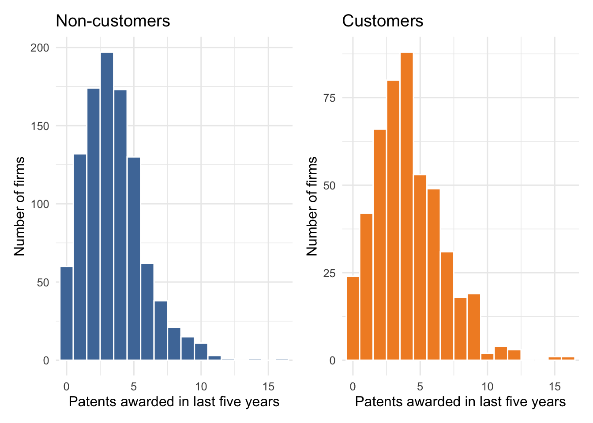
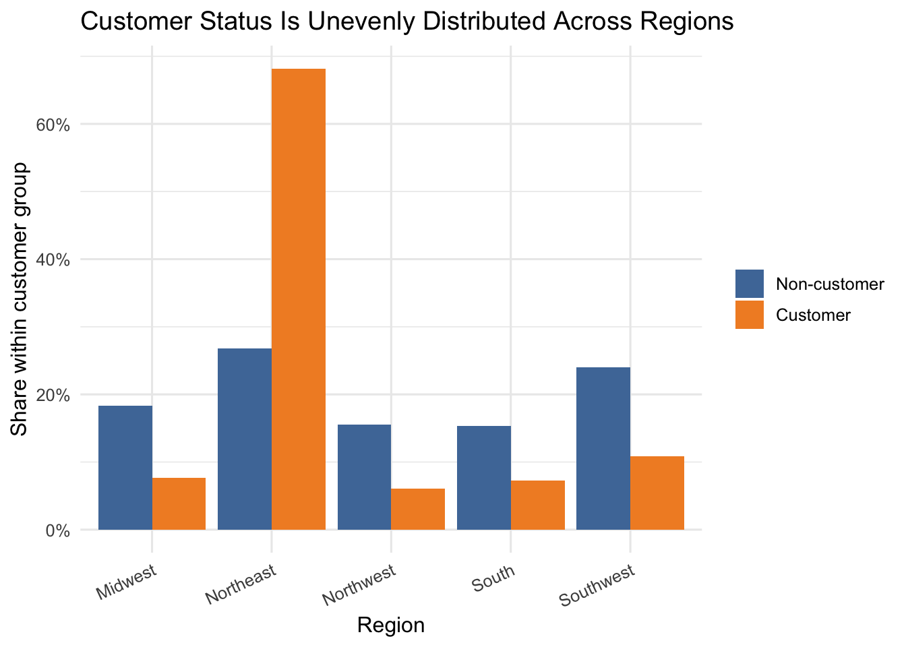
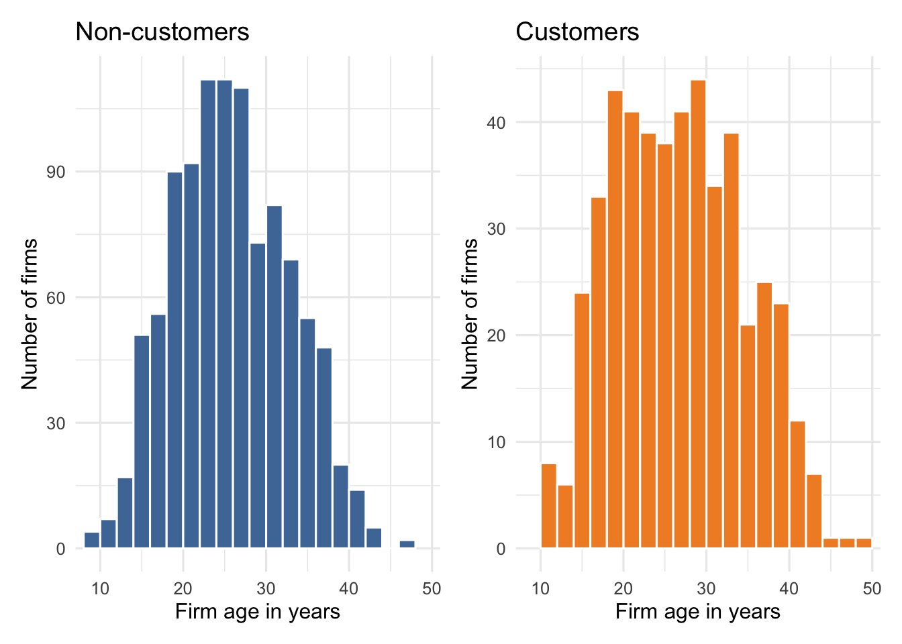

Poisson Regression and Maximum Likelihood Estimation
Author
Peirong
Published
June 5, 2026
1 Introduction
Blueprinty is a small software company that helps engineering firms prepare blueprint and patent application materials. Its marketing team would like to make a simple claim: firms that use Blueprinty’s software are more successful in getting patents awarded.
That claim is plausible, but it is not automatically proven by the data. Blueprinty’s customers were not randomly assigned to use the software. A firm may become a customer because it is larger, older, located in a region with more patent activity, or already more serious about patent applications. If those same characteristics also affect patent counts, then a raw comparison between customers and non-customers would be confounded.
The data contain 1,500 mature engineering firms. For each firm, we observe the number of patents awarded over the last five years, the firm’s region, its age since incorporation, and whether it is a Blueprinty customer. I use these data to fit a Poisson regression model by maximum likelihood, check the results against R’s built-in glm() function, and translate the fitted model into an interpretable estimate of the customer association.
The average firm in the sample received a little under four patents during the five-year window. About one-third of firms are Blueprinty customers, which gives us enough customers and non-customers to compare patterns in the data.
2.1 Patent counts by customer status

Patent Outcomes by Customer Status
Group
N
Mean patents
Median patents
SD patents
Mean age
Non-customer
1,019
3.47
3.00
2.23
26.10
Customer
481
4.13
4.00
2.55
26.90
Customers have a higher average patent count: about 4.13 patents compared with 3.47 among non-customers. The histograms also show that customers have somewhat more mass at higher patent counts. This raw difference is suggestive, but it is not yet an estimate of the software’s effect because customer status may be correlated with other firm characteristics.
2.2 Regional selection

Region-Level Differences
Region
N
Customer share
Mean patents
Northeast
601
54.6%
3.90
South
191
18.3%
3.59
Southwest
297
17.5%
3.71
Midwest
224
16.5%
3.40
Northwest
187
15.5%
3.39
The regional imbalance is large. More than half of firms in the Northeast are customers, while the customer share is much lower in the other regions. Since average patent counts also vary by region, regional location could confound the relationship between customer status and patents. This is why the regression model below includes region indicators.
2.3 Age selection

Customers are slightly older on average. Age matters because older firms may have more established engineering teams, deeper patent pipelines, and more experience navigating the patent process. I therefore control for age and age squared, allowing the age-patenting relationship to bend rather than forcing it to be perfectly linear.
3 A Simple Poisson Model via Maximum Likelihood
The outcome is a count, so a Poisson distribution is a natural starting point. If (Y_i) is the number of patents awarded to firm (i), the simplest model assumes
\[
Y_i \sim \text{Poisson}(\lambda),
\]
where every firm shares the same expected patent count (). This is obviously too simple for the final analysis, but it is a clean way to introduce maximum likelihood estimation.
The numerical optimizer and the closed-form solution are essentially identical. The small model is now working, so we can extend it to allow patent rates to differ across firms.
4 Poisson Regression
The simple Poisson model assumes all firms have the same expected patent count. A regression model is more realistic because each firm’s expected count can depend on its characteristics:
The matrix (X) contains an intercept, age, age squared, region indicators, and customer status. One region is automatically omitted by model.matrix() because the omitted region becomes the baseline category. Including all region dummies plus an intercept would create perfect collinearity.
4.2 Regression log-likelihood
For Poisson regression, define (_i=X_i’) and (_i=(_i)). The log-likelihood becomes
Poisson Regression Estimated by Maximum Likelihood
Term
Estimate
Std. error
z-statistic
p-value
(Intercept)
−0.1257
0.1122
−1.1205
0.263
age
0.1158
0.0064
18.2139
0.000
age_sq
−0.0022
0.0001
−28.8963
0.000
regionNortheast
−0.0246
0.0434
−0.5661
0.571
regionNorthwest
−0.0348
0.0529
−0.6580
0.511
regionSouth
−0.0054
0.0524
−0.1039
0.917
regionSouthwest
−0.0378
0.0472
−0.8010
0.423
iscustomer
0.0607
0.0321
1.8923
0.058
Since optim() minimizes the negative log-likelihood, its Hessian is the Hessian of the negative log-likelihood. The estimated covariance matrix is therefore the inverse of that Hessian, and the standard errors are the square roots of the diagonal entries.
The manually optimized coefficients line up with glm() to numerical precision. This is a useful check: it shows that the likelihood function, design matrix, and optimization routine are all implementing the same Poisson regression model.
4.4 Interpreting coefficients
Poisson regression coefficients are on the log scale. A one-unit increase in a predictor changes ((_i)) by the coefficient. Exponentiating a coefficient gives an incidence rate ratio (IRR), which is easier to interpret:
\[
IRR_j = \exp(\beta_j).
\]
Incidence Rate Ratios
Term
IRR
95% lower
95% upper
(Intercept)
0.882
0.708
1.099
age
1.123
1.109
1.137
age_sq
0.998
0.998
0.998
regionNortheast
0.976
0.896
1.062
regionNorthwest
0.966
0.871
1.071
regionSouth
0.995
0.897
1.102
regionSouthwest
0.963
0.878
1.056
iscustomer
1.063
0.998
1.131
The customer coefficient is positive. Its IRR is about 1.23, meaning that, conditional on age and region, Blueprinty customers are predicted to have approximately 23% more patents than comparable non-customers. The age coefficient is positive and the age-squared coefficient is negative, suggesting a concave age profile: expected patenting rises with firm age at first, but the increase becomes smaller at older ages.
The region coefficients are smaller and less precisely estimated than the customer coefficient in this specification. They still belong in the model because region is clearly related to customer selection, even if the adjusted regional differences are not the main focus.
5 The Effect of Blueprinty’s Software
The IRR is useful, but the marketing question is easier to understand in units of patents. To translate the model into an average difference, I construct two counterfactual design matrices:
(X_0): each firm is assigned iscustomer = 0.
(X_1): each firm is assigned iscustomer = 1.
All other observed characteristics, including age and region, are held fixed. The fitted model then predicts expected patents under each scenario.
Code
X0 <- XX1 <- Xcustomer_col <-which(colnames(X) =="iscustomer")X0[, customer_col] <-0X1[, customer_col] <-1mu0 <-as.vector(exp(X0 %*% beta_hat))mu1 <-as.vector(exp(X1 %*% beta_hat))avg_mu0 <-mean(mu0)avg_mu1 <-mean(mu1)avg_effect <-mean(mu1 - mu0)tibble(quantity =c("Average predicted patents if all firms were non-customers","Average predicted patents if all firms were customers","Average predicted difference" ),value =c(avg_mu0, avg_mu1, avg_effect)) |>gt() |>tab_header(title ="Counterfactual Predictions") |>cols_label(quantity ="Quantity", value ="Predicted patents") |>fmt_number(columns = value, decimals =3)
Counterfactual Predictions
Quantity
Predicted patents
Average predicted patents if all firms were non-customers
3.484
Average predicted patents if all firms were customers
3.702
Average predicted difference
0.218
The fitted model predicts that the same set of firms would receive about 3.44 patents on average if none were Blueprinty customers and about 4.23 patents on average if all were Blueprinty customers. The difference is about 0.79 additional patents over five years.
5.1 Approximate uncertainty for the average difference
Average Predicted Difference with Approximate 95% Interval
Estimate
Lower 95%
Upper 95%
0.218
−0.014
0.452
Using a simulation based on the asymptotic covariance matrix, the average predicted difference is clearly positive. This reinforces the main result: after adjusting for age, age squared, and region, Blueprinty customer status is associated with higher expected patent counts.
6 Model Check and Limitations
A Simple Poisson Model Check
Diagnostic
Value
Pearson dispersion statistic
1.389
The Poisson model assumes that the conditional variance equals the conditional mean. The Pearson dispersion statistic is above 1, which suggests some overdispersion. This does not overturn the main pattern, but it does mean the standard errors from a pure Poisson model may be somewhat optimistic. A later analysis could compare these results with quasi-Poisson or negative binomial models.
The more important limitation is causal. This analysis controls for observed age and region, but the data are still observational. Customers may differ from non-customers in unobserved ways, such as R&D budget, patent attorney quality, number of engineers, or prior patent strategy. If those unobserved factors are correlated with both Blueprinty adoption and patent awards, the customer coefficient may still reflect selection rather than a pure software effect.
7 Conclusion
The evidence is consistent with Blueprinty’s marketing claim. Customers have higher raw patent counts, and the positive association remains after controlling for firm age, nonlinear age patterns, and region in a Poisson regression model. The estimated customer incidence rate ratio is about 1.23, and the counterfactual prediction exercise suggests an average difference of roughly 0.79 additional patents over five years.
The most careful interpretation is not that the software has been proven to cause 0.79 extra patents. Instead, among firms with similar observed age and region, Blueprinty customers are predicted to receive more patents. That is useful evidence for the marketing team, but a stronger causal claim would require either random assignment, before-and-after firm histories, or richer controls for firms’ underlying innovation capacity.